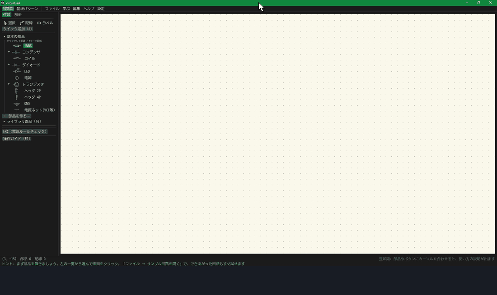
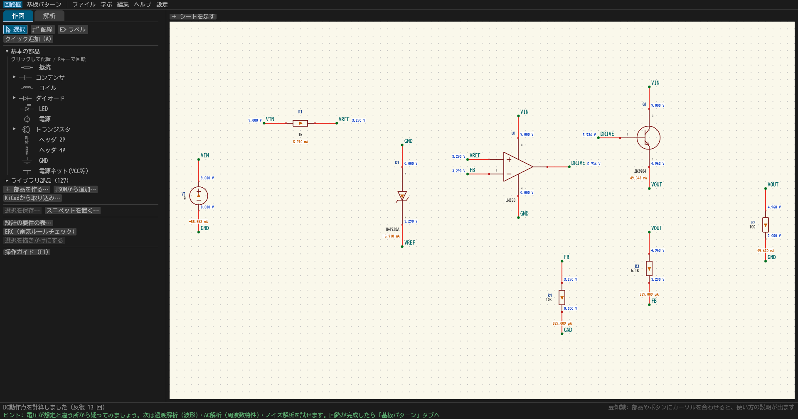
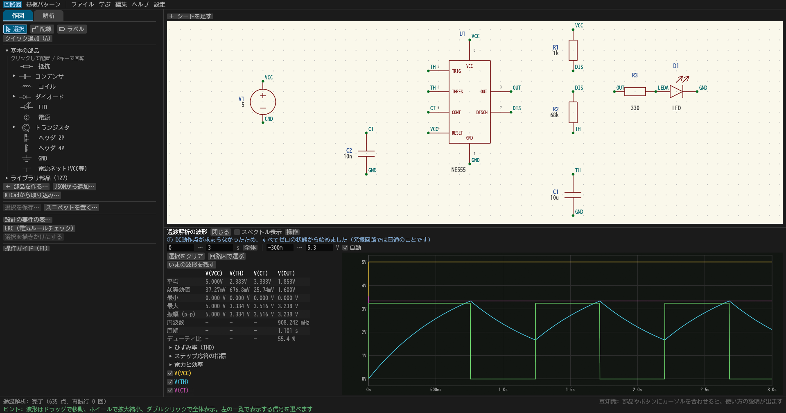
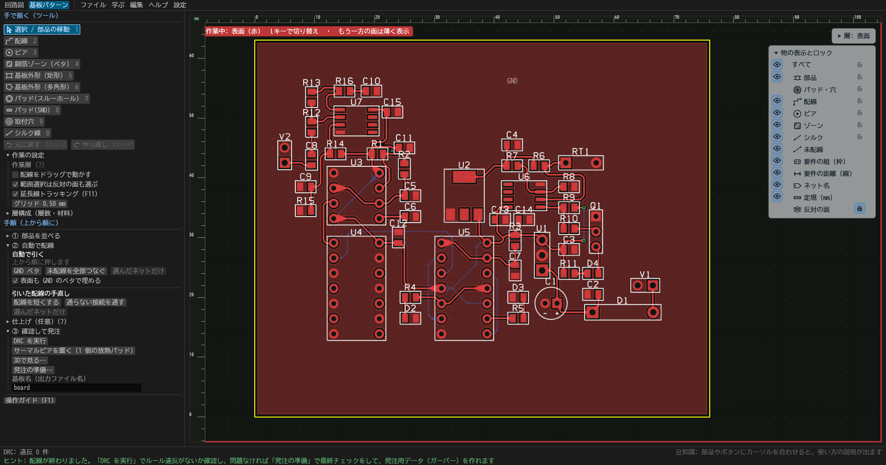
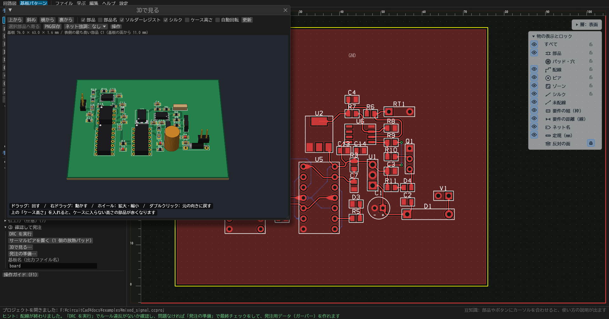
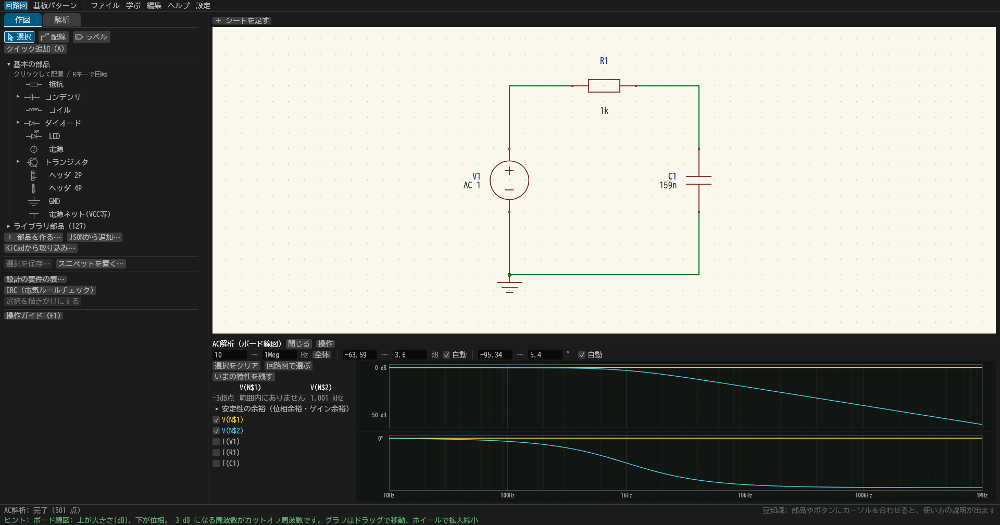
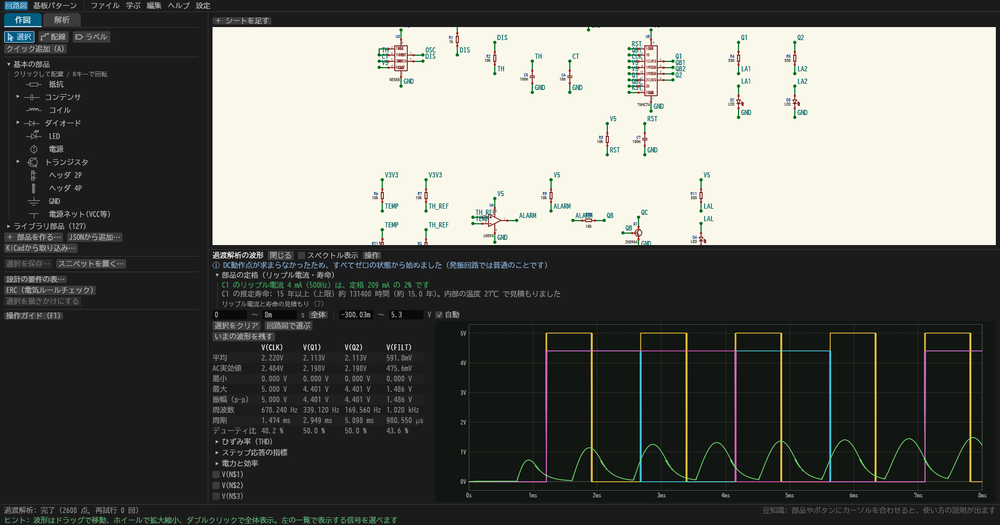
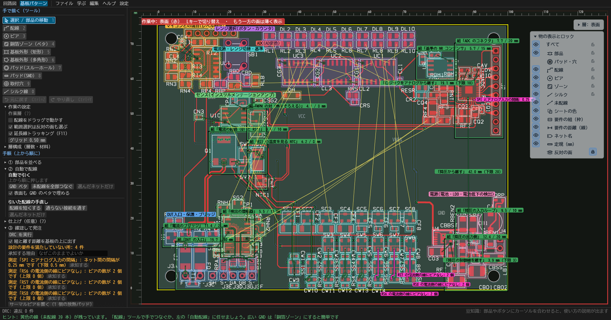
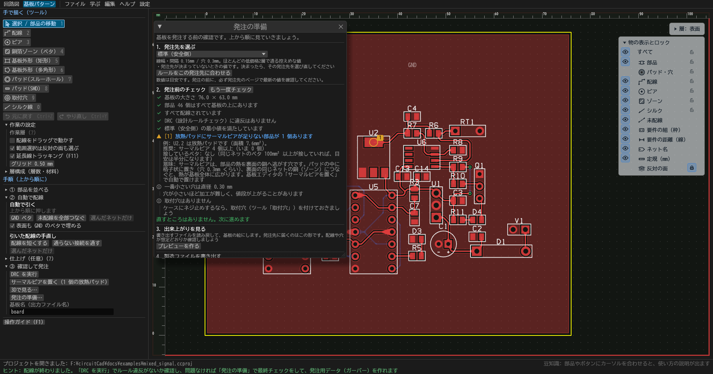

circuitCad は、回路図・SPICEシミュレーション・基板設計・Gerber出力を1本にまとめた、初学者向けの日本語の回路CADです。「学ぶ → 実験する → 基板を発注する」を、ソフトを乗り換えずにつなげます。
アルファ版・インストール不要。zip を展開して circuitCad.exe を起動するだけです。
署名がないため、Windows の SmartScreen が警告を出すことがあります。「詳細情報 → 実行」で起動できます。

画面もメッセージも日本語。ボタンにポインタを置くと説明が出て、配線ミスや定格オーバーは「原因と直し方」つきで知らせます。
学習パス7本、手順つきレッスン51本、基板のレッスン8本、判定つきの「作ってみよう」10本。結果を予想する問いも出ます。
部品やピンを断線・ショートさせて、影響をシミュレーションで比べられます。基板に故障を仕込んで直す練習もできます。
電圧は配線の色、電流は矢印で、回路図の上にそのまま重ねて表示。AC・過渡・ノイズ・位相余裕などの解析も備えています。
自動配線・DRC・3D表示から、JLCPCB / PCBWay / OSH Park のルールに合わせた発注前チェックと Gerber 出力まで。
約100部品と73本のサンプル回路を同梱。KiCad のシンボル・フットプリントも取り込めます。








画面なしの操作窓口 ccad は、1行1コマンドのスクリプトで回路作成・ERC・解析・基板・製造データを実行し、答えをJSONで返します。MCPサーバーにもなるので、AIエージェントが回路を組んで検証できます。使い方は docs/cli.md。